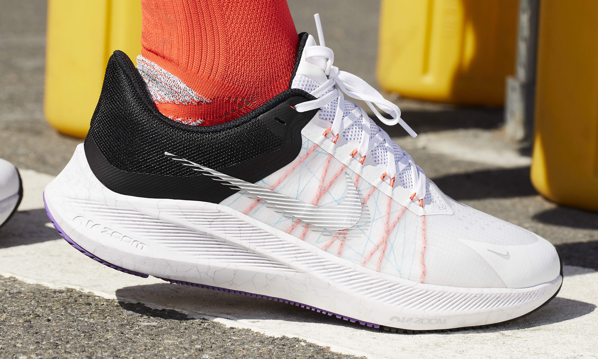

Lightweight, Breathable Support
The upper uses translucent mesh and an open-hole underlay at the forefoot for breathable comfort. A translucent window on the medial side showcases the Flywire technology through the midfoot. The Flywire cables work with the laces to provide more support as you tighten them.
Cushioning For Your Miles
Foam in the collar combines with a heel counter and tight-knit mesh for a supportive, secure feel.
Comfort Where It Counts
An Air Zoom unit in the heel and forefoot provides cushioning where you need it.